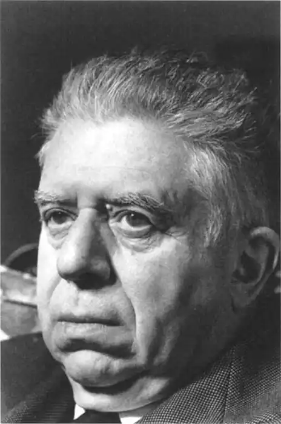

(12.10.1896 — 12.09.1981)
Італійський поет і критик Еудженіо Монтале народився в Генуї в багатодітній родині Доменіко Монтале і Джузеппіни (Річчі) Монтале. До тридцяти років Еудженіо кожне літо проводив на сімейній віллі на Лігурійській Рив'єрі, мальовничий берег якої відображений у багатьох віршах М.
Коли хлопцеві було 14 років, він серйозно захворів, не зміг ходити в школу і став багато читати: італійських класиків, французьку художню літературу, книги Шопенгауера, Кроче і Бергсона. Передбачалося, що Еудженіо, як і його батько, стане комерсантом, однак комерція анітрохи не цікавила молодої людини. Досягнувши повноліття, М. зрозумів, що практичною діяльністю він займатися не буде; якийсь час хлопець хотів стати оперним співаком, але передумав і, коли йому було близько двадцяти років, заняття музикою закинув. Коли Італія вступила в першу світову війну (1917), М. пішов на фронт і воював офіцером піхоти на австрійському фронті. Через два роки він демобілізувався і, повернувшись до Генуї, всерйоз зайнявся літературою: у 1922 р. брав участь у створенні недовго проіснував літературного журналу, почав писати в генуезьких журналах і газетах; його стаття про італійському прозаїка Італо Звево (1925) справила враження, і між двома письменниками зав'язалася переписка, що тривала до смерті Звево (1929). З появою в 1925 р. першого поетичного збірника М. "Панцирі каракатиці" ("Ossi di seppia") про поета заговорили всерйоз. В цей час в італійській поезії панував химерний пишний стиль Габріеле д'аннунціо; на відміну від нього М. уникав риторичних надмірностей, його вірші відрізнялися ясністю і конкретністю, нетрадиційної образністю. "Мені хотілося писати оголено, тільки найголовніше. Я прагнув дати єдність у різноманітності – і тим самим позбутися від усього зайвого", – писав поет. Італійські критики одностайно вважали "Панцирі каракатиці" закінченим оригінальним твором, звільненим від літературних умовностей. У Флоренції, куди М. переїхав у 1927 р., він знаходить "культуру, ідеї, традиції, гуманізм". Спочатку поет якийсь час працює у видавництві, а потім, у 1928 р., призначається директором знаменитої наукової бібліотеки Габинетто Вьесе, де він пропрацював десять років. Хоча платня М. отримував невелику, місце його цілком влаштовувало: поет мав у своєму розпорядженні величезну бібліотеку сучасної літератури. У ці роки його вірші та есе регулярно з'являлися в літературних журналах. На початку 30-х рр. М. зійшовся з молодою красивою іноземкою, яка врешті-решт його кинула; через кілька років поет познайомився з Друзиллой Танці, проте одружився на ній тільки в 50-ті роки. Дітей у них не було, Друзилла Монтале померла в 1963 р. У 1938 р. М. позбувся посади директора бібліотеки за те, що відмовився вступити в фашистську партію, а в 1939 р. вийшов другий збірник віршів М. "Обставини" ("Le occasioni"), в якому відчувається негативне ставлення до фашизму, хоча у віршах більше говориться про любов, ніж про політику; в той же час у багатьох віршах дають себе знати – часто за контрастом – доленосні суспільні події напередодні другої світової війни. Коли Муссоліні зосередив у своїх руках ще більшу владу, М. відійшов від громадського життя, в цей час він вивчає західну літературу, перекладає Шекспіра, Мелвілла, Юджина о'ніла, Т. З. Еліота, Вільяма Батлера Йитса. В перші роки другої світової війни він пише пристрасні ліричні вірші, зібрані у збірнику "Фіністерре" ("Finisterre") і опубліковані в нейтральній Швейцарії в 1943 р. Після війни М. переїжджає в Мілан, де працює літературним редактором, музичним критиком і журналістом широкого профілю в одному з провідних італійських газет "Корр'єре делла сера" ("Corrire della sera"). У третьому поетичному збірнику М., "Буря" ("La bufera e altro", 1956), який вважається багатьма критиками його кращим і найбільш представницьким твором, превалюють ті ж теми, що і в попередніх книгах поета: посилання, розлуку, самотність, пошуки свого "я". Останні книги – "Сатура" ("Satura", 1962…1970), "Щоденники 71 і 72-го" ("Diario del '71 e del '72") і "Зошит за чотири роки" ("Quaderno di quattro anni", 1977) – відрізняються більшою доверительностью і гумором, ніж попередні. М. був нагороджений Нобелівською премією по літературі в 1972 р. "за значне досягнення в поезії, яка відрізняється величезною проникливістю і вираженням поглядів на життя, геть позбавлених ілюзій". Визнаючи глобальний песимізм М., член Шведської академії Андерс Эстерлинг тим не менш у своїй промові зазначив, що "смирення поета містить в собі іскру впевненості в продовженні життя, в подоланні перешкод". Сама назва Нобелівської лекції М. "Може ще існувати поезія?" підкреслює його песимістичні погляди. І тим не менш М. стверджує, що, як свідчить історія, мистецтво знищити неможливо. Критики відзначають, що в своїй поезії М. не капітулює перед відчаєм, а продовжує пошук. У 1975 р. в "Букс эброд" ("Books Abroad") Уоллес Крафт писав, що "бажання М. впоратися з відчуженням нездійсненно, бо людині не дано ні повернути минуле, ні проникнути в сенс існування". М. прагнув не до життєвої, а до художньої правди, стверджує Крафт. Є думка, що М. разом зі своїми сучасниками Джузеппе Унгаретти і Сальваторе Квазімодо примикає до герметичної школі в італійській поезії, яка насамперед відрізняється навмисної ускладненістю. Багато критики також вказували на подібність М. з Т. З. Еліотом. Відзначаючи, що М. був не легким" поетом, англійська романістка і критик Ребекка Вест приходить до висновку, що він був поза літературних течій. "Його трудова поезія, – пише Уест, – не пропонує рішень екзистенціальних і духовних проблем, які вона аналізує; головне для поета – людська особистість, її важливість, "щоденна пристойність", як висловився сам М.". М. вважав, що обов'язок поета – "співвіднести, причому по можливості точно, ясно і оригінально, свої вірші з внутрішнім досвідом". Критик Винио Россі стверджує, що М. "повертає нас до тієї давньої традиції, коли мова та її літературні форми були ще повні життя". У творчості М. відчувається постійне прагнення уникати "красивої поезії". Музика його вірша ближче до сучасної розмовної італійської мови, ніж до літературної. Одного разу з характерними для нього стислістю і стриманістю М. висловився про свій творчий метод: "Я не шукаю поезію. Я чекаю, коли поезія відвідає мене". М. став довічним членом італійського сенату (1967), отримав кілька італійських літературних премій, а також почесні дипломи університетів Мілана, Рима і Кембриджа. М. помер у Мілані 12 вересня 1981 р.